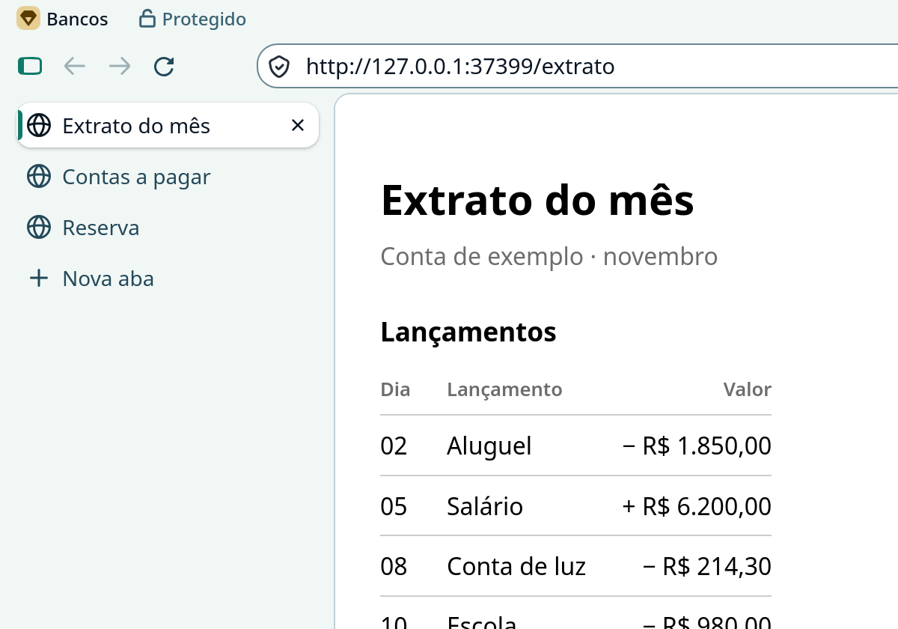
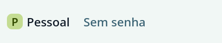
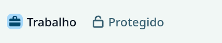
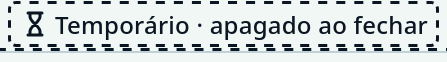
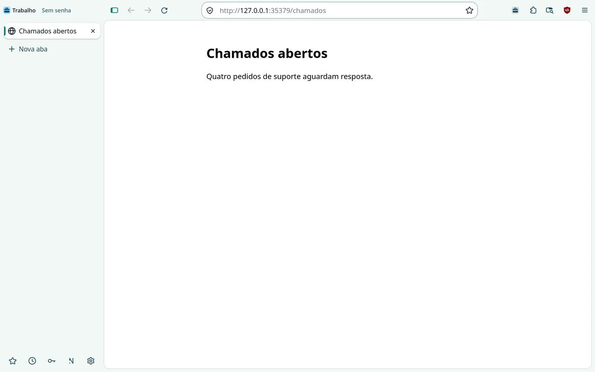
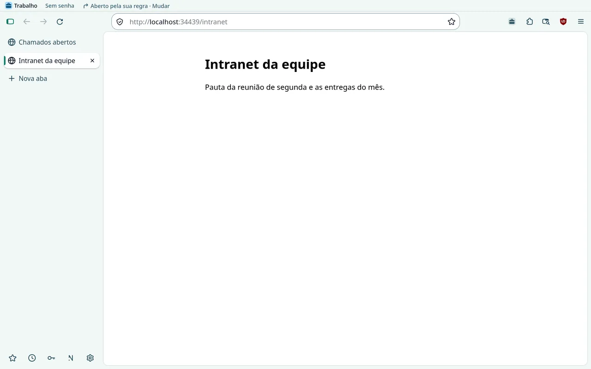

Alpha para Fedora e Ubuntu · Baixar
A web é sua. Seus dados também.
O Nulavio é o navegador para Linux que já vem protegido: bloqueia anúncios e rastreadores na primeira abertura, cifra seus perfis no disco e não manda nada para nós. Sem telemetria, sem conta, sem servidor.

- servidores do Nulavio recebendo dados do seu navegador
- 0
- padrões de fábrica alterados, cada um com o motivo e o custo por escrito
- 44
- sites populares testados com as proteções ligadas, em novembro de 2026; nenhum quebrou por causa delas
- 48
- é a meta para entregar correções urgentes do motor
- 24 h
Trabalho, banco e vida pessoal, cada um no seu perfil
Cada perfil tem os próprios logins, cookies, histórico e extensões. Você diz uma vez onde cada site abre, e o Nulavio leva cada link ao perfil certo: os que chegam de outros aplicativos, os que você digita e os que clica nas páginas.



- Troca de perfil em um clique, com cor e nome sempre à vista
- Perfil temporário: some do disco quando você fecha a janela
- Modelo para sites sensíveis: limpa tudo ao fechar e recusa instalações vindas de páginas
Sem letra miúda: perfis separam seus dados. Eles não escondem seu endereço IP.
-
Um perfil abre na sua janela

Abrir «Trabalho» abre uma janela só dele, com a sua própria cor e o seu nome.
Firefox 160.0.1 · build 20261119020726 · sha256 1459d46231b2…
Ver a cena inteira
Na tela: Configurações › Perfis, com «Pessoal» e «Trabalho»; clique em Abrir no «Trabalho»; a janela do «Trabalho» abre, com a faixa «Trabalho · Sem senha».
-
Um link vai ao perfil certo

Detalhe da mesma captura, em tamanho real
O link abre na janela do «Trabalho», e a faixa diz que foi a sua regra: «Aberto pela sua regra · Mudar».
Firefox 160.0.1 · build 20261119020726 · sha256 3517fc0f667a…
Ver a cena inteira
Na tela: no perfil «Pessoal», o endereço «http://localhost:34439/intranet» é digitado; ele abre na janela do «Trabalho», cuja faixa diz «Aberto pela sua regra · Mudar».
Navegue adiante. Não deixe rastro.
Entre na lista e receba o aviso quando o Nulavio chegar ao seu sistema. Fedora primeiro, Ubuntu em seguida.